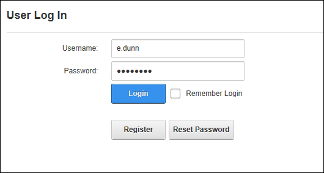

How to login to a site. This tutorial covers the default login settings that only requires a user name and a password to login. Other user account information such as names, address details and contact details may be required for login on some sites.


Once you are logged into the site and can view any messages or notifications that have been sent to your user account. You can also click on your Display Name and complete your user profile information.